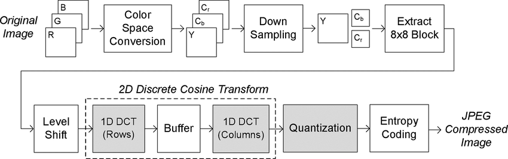
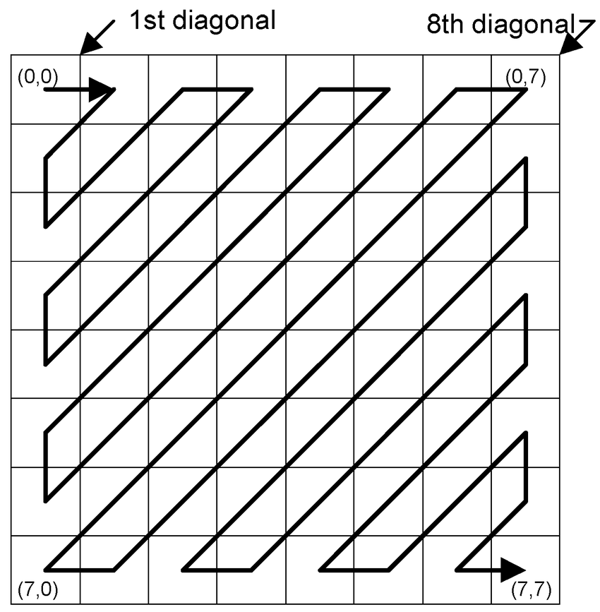

Lossy Compression -- JPEG Format
Joint Photographic Experts Group(JPEG)is commonly used method for the lossy compression of image, where the degree of compression ratio can be adjusted. Typically a tradeoff between storage size and image quality.
| Advantage | Disadvantage |
|---|---|
| High Compression Ratio:significantly reducing file size without substantial decrase in image quality. | Not Ideal for All Types of Images: simple line art, graphics are more suitable for JPEG, where less risk of losing clarity. |
| Widely Supported: JPEG is the most widely supported format across different softwarem web platforms and devices. | Artifacts: Overcompression may introduce visual artifacts, like blurring or blockiness |
| Efficient Storage: smaller file size means better saving storage space on devices. | Unsuitable for Transparent Image: it will turn transparent background to write pixel, caused distorted effect. |
Compression Method -- Discrete Cosine Transform (DCT)
| Process Of Compression: |  | Zigzag Ordering: |  |
| Step 1: Color Space ConversionCoverts image from RGB to YCbCr, where Luminance(Y), and two chrominace components (Cb,Cr). | Step 5: QuantizationDecrease the number of DCT coefficients values, prior discrad less important information to compress data. |
| Step 2: SubsamplingReduce the Cb,Cr resolution, decrasing the color detail that human not easy to notice. | Step 6: Zigzag OrderingReordering the quantized coefficients in zigzag patten which grup important data at the start. |
| Step 3: Block SplittingDivide the image nto 8x8 pixel blocks which for the DCT process and compression. | Step 7: Entropy CodingUse Run-Length Encoding(RLE) and Huffman coding to mark down the cofficients. |
| Step 4: Discrete Consine Transform Reform into a 8x8 blocks from spatial to frequency domain, grouping most visual information to some cofficients. | Step 8: File FormattingCapture the compressed data, header and metadata into the JPEG file. |
Compare Between Different Compression Ratio in JPEG
| 10% Quality: |  |
40% Quality: | |
|---|---|---|---|
| 70% Quality: | 90% Quality: |